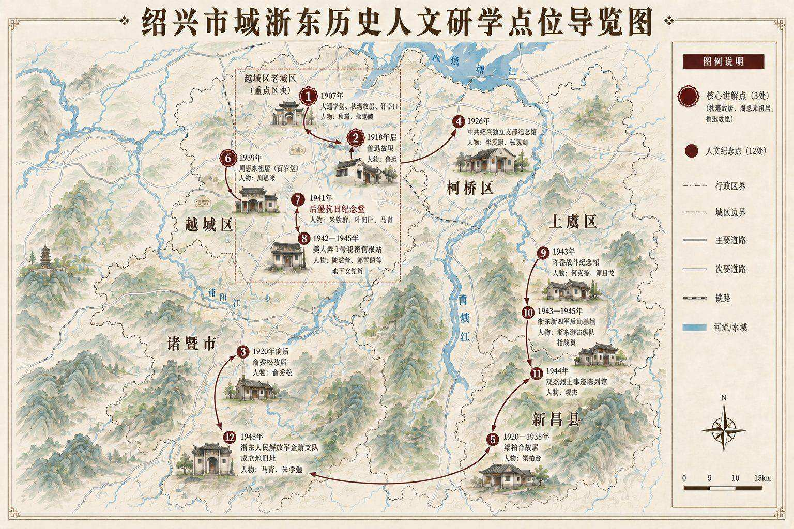

绍兴红色文化数字化传播工程
绍兴是全国首批历史文化名城，也是中国近代革命的重要发源地之一。从秋瑾、鲁迅到周恩来，从辛亥革命到抗日战争，再到中国共产党领导革命的伟大实践，绍兴保存着大量具有重要历史价值的红色文化资源。
本项目以「寻越地红色根脉，传承庚戊红色薪火」为主题，系统梳理了绍兴市域十二处具有代表性的红色历史点位，通过实地调研、视频拍摄、地图绘制与网站建设等方式，构建一个集文化展示、思政教育、数字传播于一体的综合性平台。
我们团队原创绘制了手绘版《绍兴市域浙东历史人文研学点位导览图》，并选取秋瑾故居、鲁迅故里、周恩来祖居三处核心点位开展实地讲解拍摄，以青年视角讲述革命人物的成长经历与精神内涵。
点击地图可放大查看 · 切换查看手绘版

三处重点红色教育基地 · 青年视角讲述
走近鲁迅的一生，感受他为民族觉醒而奋斗的精神历程。从百草园到三味书屋，从弃医从文到以笔为枪。
"休言女子非英物，夜夜龙泉壁上鸣。" 走进鉴湖女侠的革命人生，感受一位杰出女性的伟大选择。
"为中华之崛起而读书"——从绍兴祖居走出的人民总理，一生践行初心，将个人理想融入民族复兴伟业。
走进增太和实践团队的背后，看看年轻人是怎样用脚步去参与赤色当代的传承与当代。
从越城到诸暨 · 从新昌到上虞 · 串联绍兴红色脉络
实地调研 · 青年脚步丈量红色土地
从历史梳理到数字传播的完整闭环
系统整理绍兴十二处红色历史点位资料与人物研究
手绘版与数字版《绍兴浙东历史人文研学导览图》
三部实景讲解视频 + 实践花絮，青年视角讲述
红色文化展示网站，图文视频交互一体化呈现